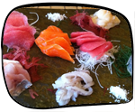
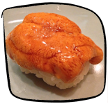
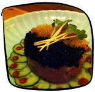
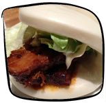
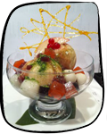
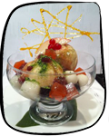

Turning Japanese? You really think so? Well, even if you're not a Japanophile, you may just become one after trying one of these Japanese joints. You'll feel like you're stepping into a little piece of Japan itself when you experience one of these restaurants:

If you've never tried Japanese barbecue before, you must try this place. Succulent meats sizzle in front of you until the temptation is too much to resist. This is a great place to bring a group of friends. They also serve Lady M Mille Crepes for dessert. Pick me!
This is quite possible the best sushi place in New York City. The waiters give off a real sense of Japanese hospitality. Sit at the sushi bar if you can. As a bonus, the sushi pieces are smaller than average, so you can fit a whole piece in your mouth and still eat daintily. Pick me!
This place is tucked into a shady basement, which surprisingly is like an escape into a real Japanese eatery. Get small plates, like Japanese tapas - great for sharing. Pick me!
This place competes head to head with Ippudo for the title of best ramen in New York City. And the longest lines too. There are no reservations and fewer than 20 chairs in this joint, but the wait is well worth it. Pick me!
This international chain of ramen places is world-renowned and has the lines to prove it. Try the special ramen, and if you're hungry don't forget to ask for a refill of noodles. There are also yummy side dishes like pork buns. Pick me!
 

This place is known for its dessert more than anything else, but if you're looking for a meal you can get one here too. Vegan, vegetarian, and gluten-free friendly. Pick me!